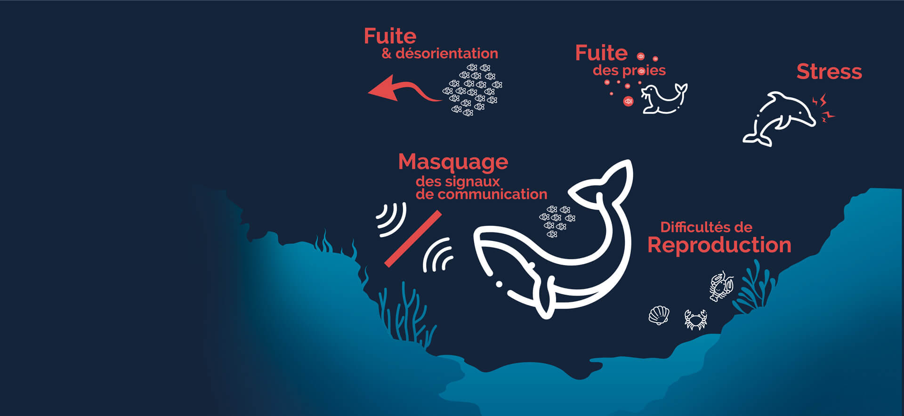

Introduction
" La pollution marine est un problème environnemental majeur qui affecte les océans et les mers du monde entier. Elle provient de sources variées et prend de nombreuses formes, chacune ayant des conséquences désastreuses sur la vie marine, les écosystèmes, et la santé humaine. Voici un aperçu des principaux types de pollution marine et de leurs impacts.".

Pollution par les plastiques
Les déchets plastiques sont l'un des polluants les plus visibles dans nos océans. Chaque année, des millions de tonnes de plastique se retrouvent dans les mers, provenant de sources terrestres et maritimes. Ces déchets incluent des articles tels que des sacs, des bouteilles, des filets de pêche, et des microplastiques, qui sont particulièrement dangereux car ils peuvent être ingérés par la vie marine, entraînant des blessures ou la mort.
Pollution chimique

Les océans sont également pollués par une variété de substances chimiques, y compris les pesticides, les herbicides, les métaux lourds, et les hydrocarbures. Ces polluants proviennent de l'agriculture, de l'industrie, de l'exploitation minière, et du transport maritime. Ils peuvent s'accumuler dans les écosystèmes marins, empoisonner la vie marine, et entrer dans la chaîne alimentaire.
Pollution sonore
Les océans sont de plus en plus affectés par la pollution sonore, principalement due au trafic maritime, à l'exploration pétrolière et gazière, et aux activités militaires. Le bruit sous-marin peut perturber la capacité des espèces marines à communiquer, à se nourrir, et à naviguer, menaçant leur survie.
Qu'est ce qui PROVOQUE CELA ?
Résumé
La lutte contre la pollution marine nécessite une action coordonnée à l'échelle mondiale, impliquant les gouvernements, les industries, les communautés et les individus. En réduisant notre dépendance aux plastiques à usage unique, en améliorant le traitement des eaux usées, en adoptant des pratiques agricoles durables, et en réglementant les activités industrielles et maritimes, nous pouvons contribuer à protéger et à préserver les océans pour les générations futures.